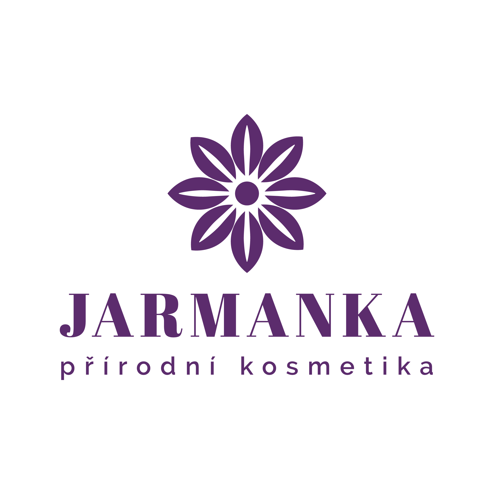
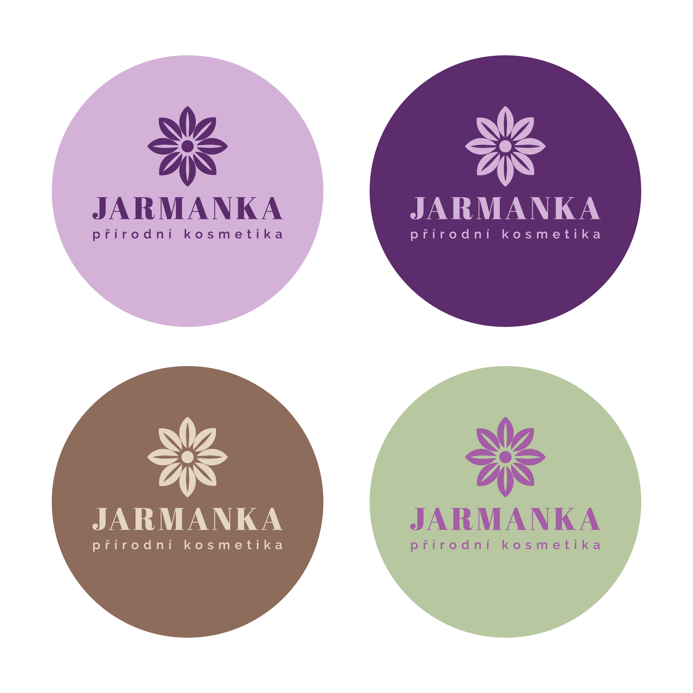
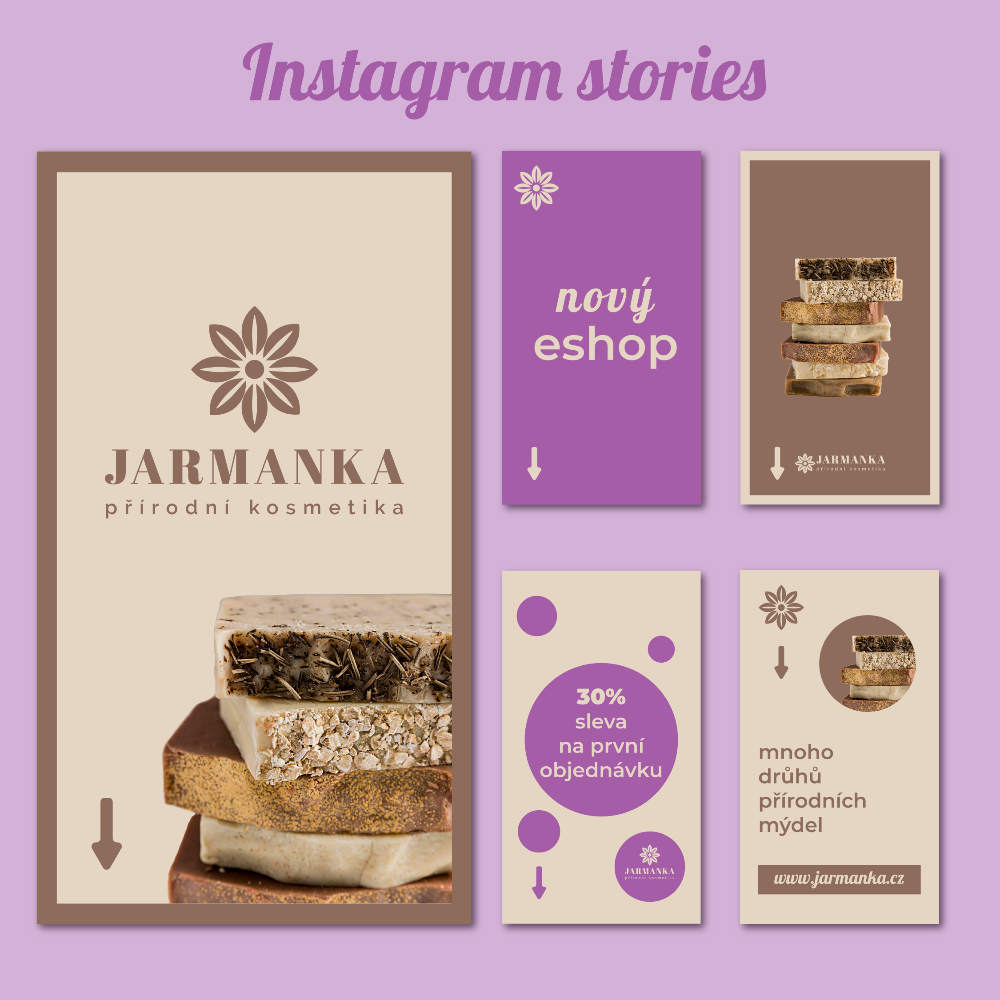

Jarmanka - přírodní kosmetika
Fiktivní branding kavárny – logo, vizitka a posty na Instagram pro snídaňovou nabídku.



O projektu
Nettie je smyšlený koncept útulné městské kavárny, pro který jsem navrhla vizuální identitu jako cvičný projekt. Cílem bylo vytvořit moderní a přitom přívětivý vizuální styl, který osloví cílovou skupinu milovníků kvalitní kávy a snídaní.
Projekt zahrnuje návrh loga, tiskoviny (vizitku) a vizuály pro sociální sítě zaměřené na propagaci snídaňového menu. Pracovala jsem s jemnou typografií, teplou barevností a čistým layoutem pro přirozený a profesionální vzhled značky.